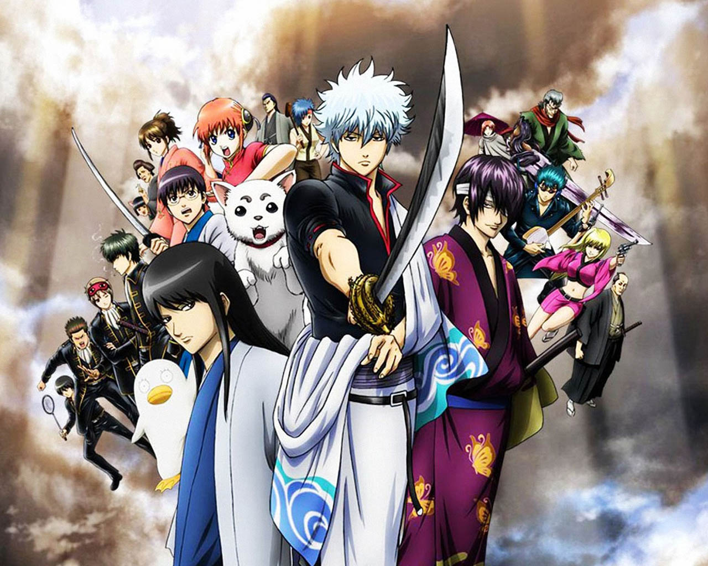

ik vind games leuk om te spelen omdat er veel in te doen is in games. ik speel veel fps games, battle royale games en fighting games. ik speel games vaak met vrienden omdat het mij leuk lijkt om te doen in mijn vrije tijd.
ik kijk ook anime. animes zijn japanse geanimeerde [getekend] series die voor kinderen en voor volwassenen zijn. de foto die boven deze tekst staat is van de anime die heet gintama. het is een comedy/action anime. het is een anime die gaat over een samurai die in een moderne tijd leeft omdat aliens zijn land japan hadden overgenomen waardoor hij en de andere mensen van japan met de aliens samen moesten leven. de main character van de anime is grijs harige man gintoki.
mijn favoriete fighting game moment